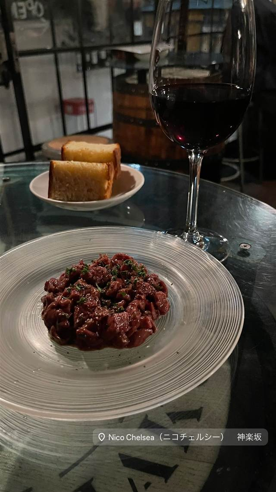
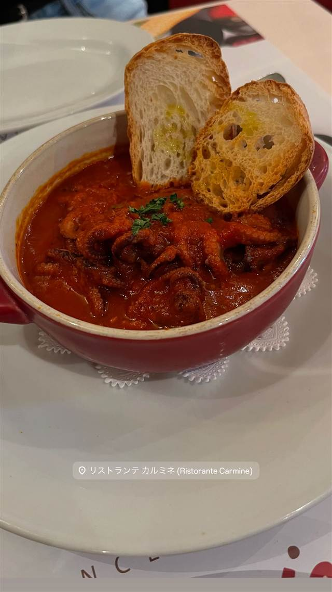
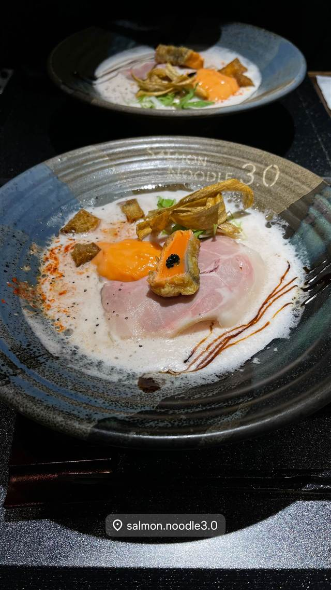
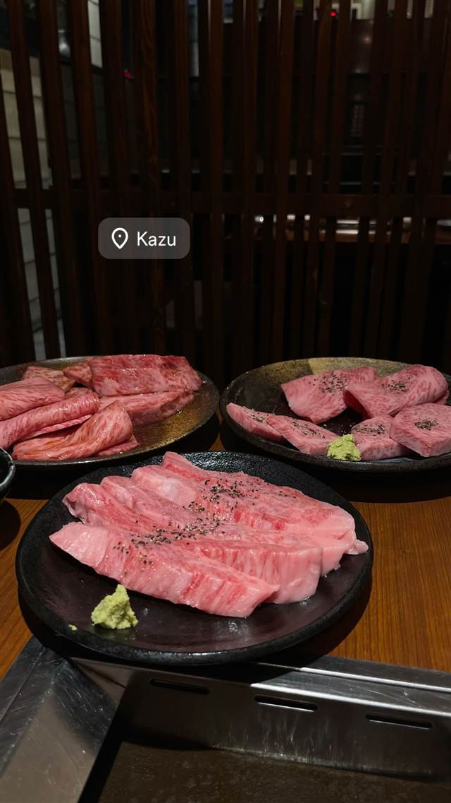
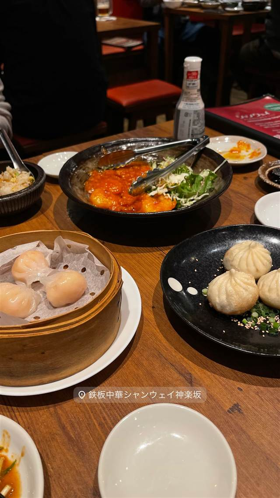

Nico Chelsea（ニコチェルシー）
腕利き猟師から仕入れる鹿・猪・鴨・キジの炭火ジビエ
Nico Chelsea（ニコチェルシー） 神楽坂
神楽坂の路地裏にある一軒家風のビストロで、全国の腕利き猟師から仕入れた鹿・猪・鴨・キジなど国産ジビエを炭火でシンプルに焼き上げるのが持ち味。ワインセラーを備えた店内には個室もあり、気軽にジビエを楽しめる一軒として親しまれている。
TRIVIA
豆知識
- 扱うジビエの種類が鹿・猪・鴨・キジ・うさぎと幅広い
- 店内にワインセラーを備え豊富なワインを揃える
REVIEWS
世間の評判
3.62食べログ
ジビエ料理の質と落ち着いた雰囲気
- 臭みのないジビエ料理と一番人気の鹿のタルタルを評価する声が多い
- 古民家を生かした隠れ家的な雰囲気と自分でワインを選べる点を評価する声が多い
- 価格がやや高めであることや予約の取りにくさを指摘する声もある
食べログ 口コミ411件
| 看板 | 鹿・猪・鴨・キジ・うさぎなど国産ジビエの炭火焼き |
|---|---|
| こだわり | 全国の腕利き猟師から仕入れた新鮮なジビエを炭火でシンプルに焼き上げる |
| どこから | 都心 |
| 行くなら | 予約必須 |
| 営業時間 | 月〜金 17:00-23:00 土 16:00-23:00 日 休み |
| 予算 | 夜 ¥5,000～¥5,999 |
| 場所 | 飯田橋 東京都新宿区神楽坂 |
| メモ | 神楽坂の路地にある一軒家風の店で、ワインセラー・個室あり |
食べたもの：肉料理とワイン
NEARBY
近い店・同じ系統の店
-
 ピザ 飯田橋駅・牛込神楽坂駅
400℃ PIZZA TOKYO
岡山本店直系、4日仕込みの高加水生地で焼く蜂蜜がけピッツァ
夜 ¥10,000～¥14,999
ピザ 飯田橋駅・牛込神楽坂駅
400℃ PIZZA TOKYO
岡山本店直系、4日仕込みの高加水生地で焼く蜂蜜がけピッツァ
夜 ¥10,000～¥14,999
-
 パスタ 飯田橋
カルボナーラ専門店 ハセガワ 神楽坂（HASEGAWA）
卵とチーズの配合を何千回も試作し昆布と鰹節の出汁を隠し味にする
夜 ¥3,000～¥3,999
パスタ 飯田橋
カルボナーラ専門店 ハセガワ 神楽坂（HASEGAWA）
卵とチーズの配合を何千回も試作し昆布と鰹節の出汁を隠し味にする
夜 ¥3,000～¥3,999
-

イタリアン 牛込神楽坂駅 リストランテ カルミネ 1987年に日本初のイタリア人オーナーシェフとして開業した店 昼 ¥3,000～¥3,999 夜 ¥6,000～¥7,999 -

煮干し・魚介 神楽坂駅 サーモンnoodle 3.0 サーモン一匹を骨まで使い切る世界初のサーモン専門ラーメンを名乗る 昼 ¥1,000～¥1,999 夜 ¥1,000～¥1,999 -

焼肉 飯田橋 焼肉家 KAZU 神楽坂 全席個室で味わう佐賀牛・仙台牛などA5厳選和牛 昼 ¥1,000～¥1,999 夜 ¥6,000～¥7,999 -

鉄板中華 飯田橋駅・牛込神楽坂駅 鉄板中華 青山シャンウェイ神楽坂 中華鍋を使わず鉄板で焼く名物の毛沢東のスペアリブ 昼 ¥1,000～¥1,999 夜 ¥5,000～¥5,999